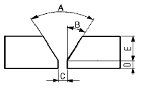
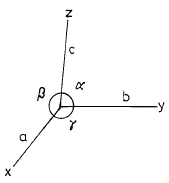
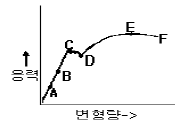

방사선비파괴검사산업기사(구) (2002-05-26 기출문제)
1과목: 방사선투과검사 시험
1. 방사선의 강도를 나타내는 단위로 [R/h]가 쓰인다. 이것의 정확한 의미는?
- 시간당 감마선
- 시간당 엑스선
- 시간당 렌트겐
- 수소당 존재하는 방사선
(정답률: 알수없음)

2. 엑스선을 이용한 방사선투과검사의 다음 설명중 틀린 것은?
- 필터는 방사선을 경화(hardening)시키므로 과잉의 피사체 콘트라스트를 줄이게 된다.
- 필터는 방사선을 경화(hardening)시키므로 보다 투과력이 높게 된다.
- 필터의 사용은 전압을 올리는 것과 비슷한 효과가 있다.
- 필터를 사용하면 산란선을 제거하여 방사선을 경화시키므로 촬영시간을 단축할 수 있다.
(정답률: 알수없음)
3. 방사선투과시험으로 불연속의 깊이를 알고자 할 때 사용되는 검사법은?
- 자동 방사선투과시험(auto radiography)
- 미세 방사선투과시험(micro radiography)
- 중성자 방사선투과시험(neutron radiography)
- 파라렉스 방사선투과시험(parallax radiography)
(정답률: 알수없음)
4. 비파괴검사에 사용하기 위해 Co-60은 무엇을 방출하는가?
- 알파선
- 열전자
- 감마선
- X선
(정답률: 알수없음)
5. 방사선투과시험에서 필름에 200룩스의 광을 입사시켰더니 100룩스가 투과되었다. 사진농도는 얼마나 되는가?
- 0.1
- 0.3
- 0.5
- 1.0
(정답률: 알수없음)
6. 피사체 콘트라스트에 영향을 미치는 인자는?
- 관전류
- 필름의 종류
- 방사선의 선질
- 스크린의 종류
(정답률: 알수없음)
7. 어떤 방사성 동위원소의 붕괴 상수가 6.93x10-3/일이다. 이 동위원소의 반감기는?
- 10일
- 50일
- 75일
- 100일
(정답률: 알수없음)
8. 방사선 투과선(線)에 대한 산란선 비율이 감소하면 결함상의 콘트라스트는 어떻게 되는가?
- 증가한다.
- 감소한다.
- 변화하지 않는다.
- 산란선의 에너지가 높아짐에 따라 증가한다.
(정답률: 알수없음)
9. 방사선의 관리에 관한 설명이 잘못된 것은?
- 사용후 선원이 용기내에 있는지 확인한다.
- 작업개시전 작업주변의 방사선량을 측정 기록한다.
- 사용전 선원용기, 안전장치 등이 정상인지 확인한다.
- 일시적 사용시 관리구역내 일반인 출입을 개방한다.
(정답률: 알수없음)
10. 다음 중 동위원소(Isotope)에 대한 설명으로 틀린 것은?
- 원자번호가 같고 질량수가 다른 것
- 양성자수가 같고 중성자수가 다른 것
- 양성자수가 같고 질량수가 다른 것
- 핵의 전하수가 같고 궤도전자수가 다른 것
(정답률: 알수없음)
11. 방사선투과시험시 명료도(definition)에 영향을 미치는 사항을 열거한 것중 관계가 먼 것은?
- 필름의 입상성
- 형광 증감지의 입상성
- 시험체의 두께차
- 필름과 증감지의 밀착
(정답률: 알수없음)
12. 비파괴평가 방법중 정량적 비파괴평가(QNDE)에 가장 적합한 방법은?
- 방사선투과검사
- 초음파탐상검사
- 자분탐상검사
- 음향방출시험
(정답률: 알수없음)
13. 방사선투과시험시 선원의 크기가 2㎜, 선원에서 시험편까지의 거리가 60㎝, 시험편과 필름사이의 거리가 1㎝라면 기하학적 불선명도는?
- 0.03㎜
- 2㎜
- 0.2㎜
- 0.66㎜
(정답률: 알수없음)
14. 다음 중 소멸가스(Quenching Gas)가 필요한 검출기는?
- 포켓전리함
- 비례계수관
- G-M 계수관
- 신틸레이션 계수관
(정답률: 알수없음)
15. 다음 중 형광 투시법의 단점으로 옳은 것은?
- 검사요원에 대한 주기적인 교육이 요구된다.
- 스크린에서 밝은 빛을 발산한다.
- 불연속이 확대되어 나타난다.
- 미세한 불연속은 검출이 어렵다.
(정답률: 알수없음)
16. 방사선의 강도가 X선 축에서 어느 정도의 경사를 가질 때 최대의 경사효과를 얻을 수 있는가?
- 약 45°
- 약 30°
- 약 20°
- 약 10°
(정답률: 알수없음)
17. 초음파탐상시험시 매질내 입자의 운동방향과 파의 진행방향이 직각일 때의 파동 형태는?
- 판파
- 종파
- 횡파
- 표면파
(정답률: 알수없음)
18. 다음 중 에너지에서 물질로 또는 물질에서 에너지로 변환하는 관계를 나타내는 현상끼리 바르게 짝지은 것은?
- 전자쌍생성 - 양전자 소멸
- 양전자 소멸 - 내부전환
- 내부전환 - 전자포획
- 전자포획 - 전자쌍생성
(정답률: 알수없음)
19. 와전류탐상시험에서 지시에 영향을 주지 않는 것은?
- 시험품의 전도도
- 시험품의 탄성계수
- 시험품의 투자율
- 시험품의 시험 코일간 거리
(정답률: 알수없음)
20. 투과사진의 농도 D1의 부분에 농도 D2의 결함상이 존재하는 경우에 투과사진 상에서 결함의 존재를 인지할 수 있느냐 하는 것은 결함에 의한 농도차 ΔD = D2 - D1과 결함의 존재를 인지할 수 있는 최소의 농도차 즉 식별한계 콘트라스트 ΔDmin 와의 관계이다. 다음 중 결함이 식별되지 않는 것은?
- ｜ΔD｜ > ｜ΔDmin｜
- ｜ΔD｜ = ｜ΔDmin｜
- ｜ΔD｜ < ｜ΔDmin｜
- ｜ΔD｜÷｜ΔDmin｜ = 1
(정답률: 알수없음)
2과목: 방사선투과검사 시험
21. X선관의 냉각장치가 작동되지 않는 상태로 X선 발생장치를 사용시 다음 중 가장 큰 손상을 받는 곳은?
- 유리관(tube envelope)
- 필라멘트(filament)
- 양극판(anode plate)
- 표적판(target)
(정답률: 알수없음)
22. 방사선투과검사의 노출조건은 노출도표에 의거한다. 그렇다면 X선 노출도표에는 있으나 γ선 노출도표에는 없는 인자는 다음 중 어느 것인가?
- 필름의 종류
- 관전압
- 시험체 두께
- 필름농도
(정답률: 알수없음)
23. 다음 중 X선관의 초점 크기에 직접적으로 관련되는 것은?
- 음극의 집속컵 크기
- 양극의 크기
- X선관내의 진공도
- 관전압
(정답률: 알수없음)
24. 주강품내에 직경 5mm인 gas cavity가 있을 때 X선 초점과 Cavity간 거리는 60cm이고 Cavity와 필름간 거리가 30cm일 때 필름상에 나타나는 gas cavity의 직경은? (단, 선원은 점선원으로 가정한다.)
- 2.5 mm
- 3.3 mm
- 7.5 mm
- 10.0 mm
(정답률: 알수없음)
25. 필름 관찰기면의 밝기가 500Lux이고, 투과사진을 투과한 후의 밝기가 50Lux라면 이 투과사진의 농도는?
- 0.5
- 1.0
- 1.5
- 2.0
(정답률: 알수없음)
26. 현상제의 구성 성분은 환원제, 억제제, 보항제, 경화제 등으로 구성되어 있다. 다음 중에서 경화제는?
- 페니돈(phenidone)
- 하이드로퀴논(hydroquinone)
- 아황산나트륨(sodium sulfate)
- 글루터알데히드(gluteraldehyde)
(정답률: 알수없음)
27. 두께 30mm 강용접부를 선원.필름간 거리 30cm에서 Ir-192 40Ci로 1분간 노출을 주어 적절한 사진농도를 얻었을 때 이 선원으로 5개월 후에 선원.필름간 거리 60cm에서 같은 농도를 얻기 위한 노출시간은?
- 4분
- 8분
- 16분
- 32분
(정답률: 알수없음)
28. 다음 중 덮개의 일종으로 필요한 부분만 방사선을 보내어 산란방사선의 영향을 줄이는 것이 아닌 것은?
- 콜리메타
- 다이아프램
- 콘
- 납 증감지
(정답률: 알수없음)
29. 다음 중 촬영 필름의 적절한 현상을 위한 3가지 기본 용액은?
- 현상액, 정착액, 물
- 정지액, 초산액, 물
- 현상액, 정지액, 과산화수소
- 초산액, 정착액, 정지액
(정답률: 알수없음)
30. 다음 중 용접부결함이 아닌 것은?
- 용입부족
- 파이프
- 수축관
- 융합부족
(정답률: 알수없음)
31. 두개의 X선 발생장치에서 관전압 및 관전류를 동일하게 하여도 같은 피사체에 대한 투과선량이 다르게 되는 이유를 설명한 것이다. 다음 중 틀린 것은?
- 사용한 필름의 감도
- 고전압 발생방식의 차이
- X선 관의 구조
- 관전류 측정에 따른 오차
(정답률: 알수없음)
32. 필름특성곡선에 대한 설명이다. 잘못된 것은?
- 기울기는 필름콘트라스트에 영향을 준다.
- 필름의 속도(speed)는 필름특성곡선으로 서로 비교하여 나타낼 수 있다.
- 필름특성곡선상에서의 기울기는 항상 일정하다.
- H & D 곡선이라 부르기도 한다.
(정답률: 알수없음)
33. 방사선투과시험시 산란선을 억제하는 기구는?
- 조사범위 조절장치
- 형광증감지
- 계조계
- 투과도계
(정답률: 알수없음)
34. 선원과 투과도계 사이의 거리가 투과도계- 필름간 거리의 2.5f배 이상이라 할 때 기하학적 반음영의 값은 얼마이하 이어야 하는가 ?(단, f는 선원크기로 mm 단위이다.)
- 0.2mm
- 0.4mm
- 2.5mm
- 5.0mm
(정답률: 알수없음)
35. 방사선투과검사시 카세트 뒷면에 납글자 B를 부착하는데 이것은 어떤 이유인가?
- 투과도계가 필름 쪽에 부착되었음을 나타내기 위하여
- 계조계를 부착할 수 없음을 나타내기 위하여
- 후방 산란선의 영향을 나타내기 위하여
- 이중벽투과 이중상 관찰시 B쪽에서 검사함을 표시하기 위하여
(정답률: 알수없음)
36. X선 발생장치를 사용하기 전에 충분히 예열을 하는 가장 큰 이유는?
- 제어장치를 보호하고 작동을 원할하게 하기 위해
- 안전장치의 정상작동을 점검하기 위해
- 고전압 회로의 과열방지를 위해
- X선관의 수명을 연장시키기 위해
(정답률: 알수없음)
37. 용접부와 같은 공업용 방사선투과검사에 사용되는 동위원소 중 에너지 준위가 가장 낮은 것은?
- Co-60
- Cs-137
- Ir-192
- Tm-170
(정답률: 알수없음)
38. 다음 중 필름콘트라스트와 관계가 없는 것은?
- 현상시간
- 현상액의 양
- 현상온도
- 현상액의 강도
(정답률: 알수없음)
39. 방사선투과시험시 다음 중 수동현상과정의 순서가 올바르게된 것은?
- 현상-정착-수세-정지-건조
- 현상-정지-정착-수세-건조
- 정착-현상-수세-정지-건조
- 현상-건조-정지-정착-건조-수세
(정답률: 알수없음)
40. 150∼400kVp 정도의 X선 발생장치로 방사선투과시험을 할때 다음 물질 중에서 산란선을 제거하기 위해 필름의 앞, 뒤면에 사용되는 것은?
- 알루미늄
- 카드뮴
- 종이
- 납
(정답률: 알수없음)
3과목: 방사선안전관리, 관련규격 및 컴퓨터활용
41. 방사선투과시험시 개인 방사선안전관리를 위하여 필요한 방어용 기기들로 조합된 것은?
- 도시메터, 납장갑, 원격조정기
- 도시메터, 필름뺏지, 알람모니터
- 필름뺏지, 서베이메터, 납벽돌
- 비상용 납용기, 필름뺏지, 원격조정기
(정답률: 알수없음)
42. 1 MeV γ선에 대한 공기 및 연조직의 질량에너지 흡수계수는 각각 0.028cm2/g, 0.0308cm2/g 이다. 이 감마선의 세기가 200R/h인 장소에서 15분간 연조직이 피폭받은 흡수선량은 몇 rad인가?
- 0.957rad
- 31.55rad
- 47.85rad
- 191.40rad
(정답률: 알수없음)
43. KS B 0845에서 흠의 종류 중 용접 이음부의 강도 저하에 미치는 영향을 나타낸 것 중 틀린 것은?
- 둥글기를 띤 블로홀은 단면적의 감소
- 용입불량은 응력 집중
- 파이프는 응력집중
- 갈라짐은 단면적의 감소
(정답률: 알수없음)
44. 컴퓨터에 있어서 TCP와 UDP 등의 패킷 전달 서비스를 제공하며 경로 설정을 담당하는 것은?
- ARP
- SMTP
- FTP
- IP
(정답률: 알수없음)
45. ASME 규격에서는 후방산란선을 확인하기 위하여 납글자 "B"를 사용하는데 이 납글자의 최소 크기는?
- 두께 1/32인치, 높이 1/3인치
- 두께 1/16인치, 높이 1/3인치
- 두께 1/16인치, 높이 1/2인치
- 두께 1/8인치, 높이 1/2인치
(정답률: 알수없음)
46. 방사선투과 촬영시 사용되는 ASME 투과도계에서 2-1T에 대한 등가감도는?
- 0.7%
- 1.4%
- 1.0%
- 2.0%
(정답률: 알수없음)
47. 방사선 작업종사자의 피폭선량을 측정하기 위한 검출기가 아닌 것은?
- 서베이메터
- 필름 뺏지
- TLD 뺏지
- 포켓 선량계
(정답률: 알수없음)
48. KS B 0845에서 촬영배치 공식 L1 = L3 x n에서 40㎝ 필름을 사용시 선원과 투과도계간의 거리 L1은 최소 얼마로 하여야 하는가 ?(단, A급)
- 20㎝
- 40㎝
- 80㎝
- 160㎝
(정답률: 알수없음)
49. 다음 중 인터넷 검색엔진의 종류가 아닌 것은?
- Yahoo
- Galaxy
- 심마니
- MIME
(정답률: 알수없음)
50. ASME 규격에서 규정한 X-선(단일 필름)촬영시 필름농도 허용범위로서 올바른 것은?
- 1.8∼4.0
- 2.0∼4.0
- 1.3∼3.5
- 1.8 이상
(정답률: 알수없음)
51. 방사선 차폐용 물질로 경제적이고 효과적인 것은?
- 텅스텐
- 납
- 철
- 동
(정답률: 알수없음)
52. 방사선작업 종사자가 긴급작업에 종사하게 되거나 사고의 진압 등 피해의 확대를 방지하기 위하여 불가피하게 작업에 참여하게 되는 경우 허용될 수 있는 유효선량은?
- 5Sv
- 10Sv
- 0.5Sv
- 0.1Sv
(정답률: 알수없음)
53. ASCII 코드에 관한 설명 중 옳지 않은 것은?
- 대문자와 소문자를 구별한다.
- 256개의 문자표현이 가능하다.
- 영문자 하나를 7비트로 표현한다.
- 1비트의 패리티 비트를 갖고 있다.
(정답률: 알수없음)
54. KS B ⑤50에 의한 투과도계의 구조에 관한 설명이 틀린것은?
- 금속선으로 구성한 지름이 다른 5개의 철사를 쓴 일반형이 있다.(철선형 투과도계)
- 금속선으로 구성한 동일지름의 9개의 철사를 쓴 띠형이 있다.(철선형 투과도계)
- 장방형의 판에 지름이 다른 3개의 관통구멍을 만든 사각형이 있다.(유공형 투과도계)
- 원형의 판에 지름이 다른 2개의 관통구멍을 만든 원형이 있다.(유공형 투과도계)
(정답률: 알수없음)
55. KS B 0845에 의하면 모재두께가 25mm이하이고, 결함의 긴 지름이 0.5mm인 1개의 결함이 존재시 결함점수는?
- 0
- 1
- 2
- 3
(정답률: 알수없음)
56. 방사선 작업자 자신이 직접 판독할 수 있는 선량계는?
- 필름뱃지
- TLD 뱃지
- 포켓도시메터
- 알람모니터(Alarmmonitor)
(정답률: 알수없음)
57. 원자력법에 의거 Ir-192인 경우 방사성 동위원소로써 취급되어져야 할 최소 수량은?
- 1×105 Bq
- 1×104 Bq
- 1×103 Bq
- 1×102 Bq
(정답률: 알수없음)
58. ASME 규격의 기하학적 불선명도에 대한 것으로 선원의 크기가 2㎜이고 피사체 두께가 20㎜일 때 기하학적 불선명도를 2.0㎜이하로 하려면 선원 필름간의 거리는 얼마이상이어야 하는가?
- 20㎜
- 40㎜
- 60㎜
- 80㎜
(정답률: 알수없음)
59. 컴퓨터가 처리할 내용을 지시하는 명령어의 집합을 무엇이라 하는가?
- 보조기억장치
- 중앙처리장치
- 시스템 분석
- 프로그램
(정답률: 알수없음)
60. KS B 0845에 규정된 투과도계가 아닌 것은?
- 08F
- 32F
- 64F
- 02F
(정답률: 알수없음)
4과목: 금속재료 및 용접일반
61. 용접작업시 홈(groove)을 만드는 주된 이유는?
- 용입을 양호하게 하기 위하여
- 용접변형을 최소화 하기 위하여
- 전류응력의 발생을 억제하기 위하여
- 용융속도를 높이기 위하여
(정답률: 알수없음)
62. 다음 그림과 같은 용접 홈(Groove) A, B, C부 명칭으로 모두 올바른 것은?

- A : 베벨 각도, B : 홈 각도, C : 루트 간격
- A : 개선 각, B : 베벨 각도, C : 루트 면
- A : 홈 각도, B : 베벨 각도, C : 루트 면
- A : 홈 각도, B : 베벨 각도, C : 루트 간격
(정답률: 알수없음)
63. 주철에 나타나는 스테다이트(steadite)조직의 3원 공정물이 아닌 것은?
- MnS
- Fe
- Fe3P
- Fe3C
(정답률: 알수없음)
64. 부재를 접합하는 용접이음의 다섯가지 기본형에 속하지 않는 것은?
- T 이음
- 모서리 이음
- 원통 이음
- 겹치기 이음
(정답률: 알수없음)
65. 순수한 카바이트 1㎏ 에서는 이론적으로 약 몇ℓ 의 아세틸렌을 발생하는가?
- 280ℓ
- 290ℓ
- 326ℓ
- 348ℓ
(정답률: 알수없음)
66. 점용접(spot welding)시 전극소재(Electrode materials)의 요구되는 성질이 아닌것은?
- 피 용접재와 합금이 잘 될것
- 전기 전도도가 높을것
- 고온에서 경도가 높을것
- 열 전도도가 높을것
(정답률: 알수없음)
67. 그림에서 각축의 단위 길이를 a,b,c라 하고 그 사이의 각도를 α ,β ,γ라 했을 때 정방정계는?

- a=b=c, α =β =γ=90°
- a=b≠ c, α =β =γ=90°
- a≠ b≠ c, α =β =γ≠ 90°
- a=b=c, α =β =90° ,γ=120°
(정답률: 알수없음)
68. 접합하려고 하는 한쪽의 부재에 둥근 구멍을 뚫고 그곳에 용접하여 이음 하는 용접은?
- 플레어용접
- 비드용접
- 플러그용접
- 슬롯용접
(정답률: 알수없음)
69. 용착된 금속의 급랭을 방지하는 목적이 아닌것은?
- 용착금속 중에 가스나 슬래그가 떠오를 수 있는 시간을 주기 위함
- 모재와 용착금속이 자유로이 팽창, 수축하도록 하기 위함
- 담금질 경화를 방지하기 위함
- 슬래그제거를 쉽게하기 위함
(정답률: 알수없음)
70. 피복 금속아크 용접시 다음의 용접 전원 중에서 용입이 가장 깊은 것은?
- AC
- ACHF
- DCSP
- DCRP
(정답률: 알수없음)
71. 황금색으로 모양이 곱고 연성이 커서 장식용에 많이 쓰이는 것으로서 아연이 5∼20% 포함된 구리합금은?
- 포금
- 문쯔메탈
- 톰백
- 델타메탈
(정답률: 알수없음)
72. 화학적 표면경화법이 아닌 것은?
- 고주파 담금질
- 침탄법
- 질화법
- 시안화법
(정답률: 알수없음)
73. 단위포의 모서리 길이의 단위인 1Å과 같은 것은?
- 10-8㎝
- 10-8㎜
- 10-4㎝
- 10-4㎜
(정답률: 알수없음)
74. 용접 금속에 흡수된 수소가스의 악영향은?
- 선상조직(線狀組織)
- 시효경화(時效硬化)
- 청열취성(靑熱脆性)
- 적열취성(赤熱脆性)
(정답률: 알수없음)
75. Ni-Cr계 합금의 특징 중 틀린 것은?
- 전기 저항이 대단히 작다.
- 내식성이 크고 산화도가 적다.
- Fe 및 Cu에 대한 열전 효과가 크다.
- 내열성이 크고 고온에서 경도및 강도의 저하가 적다.
(정답률: 알수없음)
76. X선으로 반사법을 이용하여 금속의 결정구조를 측정할 때 결정면의 면간 거리를 나타내는 식은? 단, d:면간거리, n:정정수(正整數), λ:파장
- d=nλ/2sinθ
- d=2sinθ/nλ
- d=nλsinθ
- d=λsinθ
(정답률: 알수없음)
77. 다음 용접법 중 정전압 특성을 이용한 용접봉 송급방식이 아닌 것은?
- CO2 용접
- MIG 용접
- TIG 용접
- 서브머지드 용접
(정답률: 알수없음)
78. 소결전기 접점 재료의 구비조건 중 틀린 것은?
- 접촉저항 및 고유저항이 커야한다.
- 비열 및 열전도율이 높아야 한다.
- 융착 현상이 적어야 한다.
- 열 및 충격에 잘 견디어야 한다.
(정답률: 알수없음)
79. 응력-변형선도에서 최대하중점을 표시한 것은?

- B
- C
- D
- E
(정답률: 알수없음)
80. 서멧(cermet)의 특징이 아닌 것은?
- 고속절삭에 적당하다.
- 절삭속도의 광범위한 변화에 적당하다.
- 고온경도가 높고 내마모성, 내식성 등이 우수하다.
- 강 및 주철 절삭에 부적당하고 브레이징(Brazing)이 불가능하다.
(정답률: 알수없음)